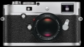
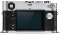
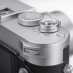
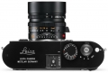
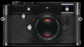

器材库 > 35mm画幅可换镜头数码相机 > M-P

规格总览
产品类型
35mm画幅可换镜头数码相机
发布日期
2014-08-22
厂家推荐价格
7,950.00 （美元）
影像规格
影像传感器
CMOS
影像传感器尺寸
23.9 x 35.8
总像素
2400万
有效像素
2400万
最大解像度
5952 x 3976
静态图像尺寸
5952 x 3976 ,4256 x 2823,2976 x 1984,1600 x 1080
静态图像格式
JPEG, RAW, RAW+JPEG, DNG
静态图像质量
标准，精细
画幅比
3:2
短片尺寸
1920×1080分辨率25p/24p
短片格式
Motion-JPEG
短片音效
内置麦克风为单声道
镜头和对焦
镜头卡口
Leica M
对焦模式
MF
手动对焦
支持
曝光控制
测光系统
Center-biased TTL
测光模式
中央重点测光, 多分区评价测光, 点测光
快门速度
60 ～ 1/4000
曝光补偿
±3EV以1/3EV级调整
连拍
徕卡M的两倍
取景器/显示屏
取景器
光学取景器
取景放大倍率
0.68倍
LCD尺寸
3.0英寸
LCD像素
92万
Live View
有
文件输入/输出
内置存储容量
2GB
存储卡
SD/SDHC, SDXC
数据接口
USB2.0
电源
电池
可充电锂电池(7.4V 1800mAh)
机身规格
颜色
黑色, 灰色
尺寸
139×80×42mm
重量
680gg
fann20072015-11-16 15:444.94 分
操作性 5.00功能性 5.00美观性 5.00趣味性 5.00耐用性 5.00性价比 4.50解像力 5.00色彩还原 5.00
wingszero2014-09-13 04:10
深拓澜2014-08-25 03:255 分
操作性 5.00功能性 5.00美观性 5.00趣味性 5.00耐用性 5.00性价比 5.00解像力 5.00色彩还原 5.00
产品图 / 样片




评测 / 相关文章
- 详细内容 （存档）
- ［试用］Leica M-P 入手开箱 （存档）
相关文章
- ［资讯］漏铜做旧 徕卡发布复古特别版M-P相机 （原站已下线）
- ［试用］Leica M-P 入手开箱 （存档）
- ［资讯］徕卡M-P （存档）